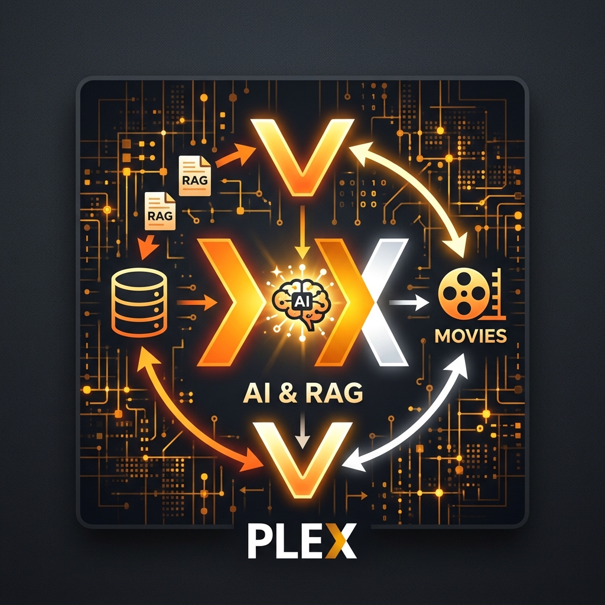

Backend
.NET Core 10, C#, ASP.NET Core Web API, Entity Framework, Dapper, FluentValidation
Francisco Javier Martínez Padilla
// software architect · .net & angular
Software Architect specialized in .NET, Angular, and AWS cloud — turning complex business requirements into scalable, production-ready platforms.
Años de experiencia
Sistemas empresariales entregados
Tecnologías dominadas
Compromiso con la calidad

// sobre mí
Soy Arquitecto de Software con más de 24 años de experiencia en el stack de Microsoft — desde .NET Framework hasta .NET Core 10 — diseñando y entregando aplicaciones empresariales full-stack con Angular, C# y SQL Server, aplicando principios SOLID, patrones de diseño y Clean Architecture.
He arquitectado sistemas de punta a punta, desde el levantamiento de requerimientos (BRD) hasta producción, incluyendo infraestructura cloud en AWS (SNS/SQS, Secrets Manager, Kinesis, CodeBuild), pipelines de CI/CD con Docker, y librerías internas compartidas distribuidas vía CodeArtifact.
Más recientemente, he integrado a Claude (Anthropic) en mi flujo de trabajo — extrayendo reglas de negocio de código existente para generar documentación BRD y aplicando prompt engineering para acelerar el diseño y la documentación técnica. Ingeniero en Desarrollo de Software y Microsoft Certified: Azure Fundamentals.
// tecnologías
.NET Core 10, C#, ASP.NET Core Web API, Entity Framework, Dapper, FluentValidation
Angular 8/14/21, TypeScript, RxJS, React, Redux
AWS (SNS/SQS, Secrets Manager, Kinesis), Docker, Azure DevOps, CI/CD
SOLID, Patrones de diseño, Clean Architecture, Microservicios, DI/IoC
Claude (Anthropic), Prompt Engineering, RAG, GitHub Copilot
// portafolio

Plataforma empresarial de gestión de beneficios para el Estado de Nueva Jersey — frontend en Angular 21 sobre microservicios independientes en .NET Core, con integración AWS SNS/SQS para la recepción automática de solicitudes.
Angular 21 · .NET Core 10 · AWS
Plataforma de evaluación de riesgos y análisis de auditoría para clientes de Deloitte, construida con Angular y un backend en .NET Core Web API conectado a SQL Server.
Angular 13 · .NET Core 6 · SQL Server
Plataforma de selección de vivienda estudiantil para Nova Southeastern University, combinando Angular y React sobre un backend en .NET Core.
Angular 8 · React 16 · .NET Core 3.1
Aplicación personal de IA generativa que conversa sobre tu biblioteca de Plex usando RAG, con modos LLM/Standard y Agent, autenticación con Google e indexado vectorial administrable.
Angular 22 · .NET 10 · RAG · Docker Ver detalles del proyecto →// trayectoria profesional

Construí un módulo de autenticación reutilizable adoptado en las aplicaciones de Burger King, Tim Hortons y Popeyes para integrar Okta SSO — evitando una reescritura completa y ahorrando a la compañía más de $100,000. Después lideré el diseño de una plataforma unificada que consolidó cuatro aplicaciones legadas.

Modernicé aplicaciones internas para la cervecería más grande del mundo, incluyendo la migración de un sistema legado de registro de acciones a WPF/XAML y la reconstrucción de herramientas de remediación sobre .NET con SQL Server.

Lideré proyectos de integración para facturación electrónica e intercambio de documentos fiscales, construyendo portales personalizados para clientes y traductores basados en XML/XSLT que conectaban sistemas ERP con las autoridades fiscales.
// contacto
¿Tienes un proyecto en mente? Escríbeme y conversemos.